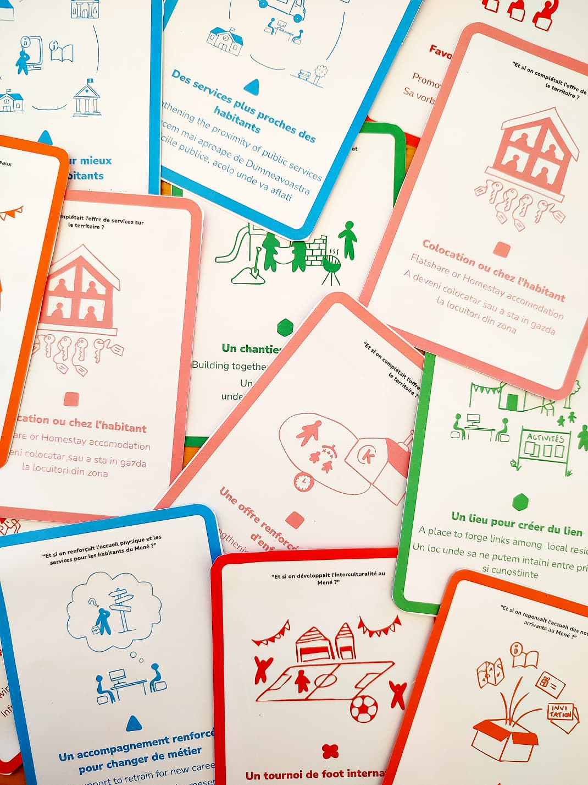
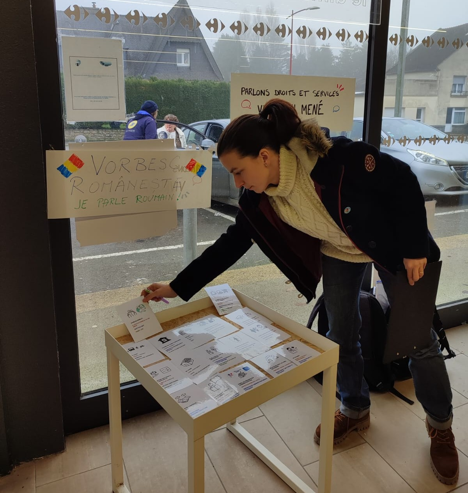
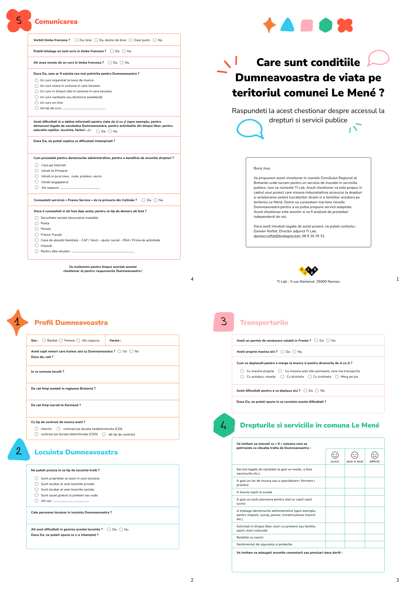
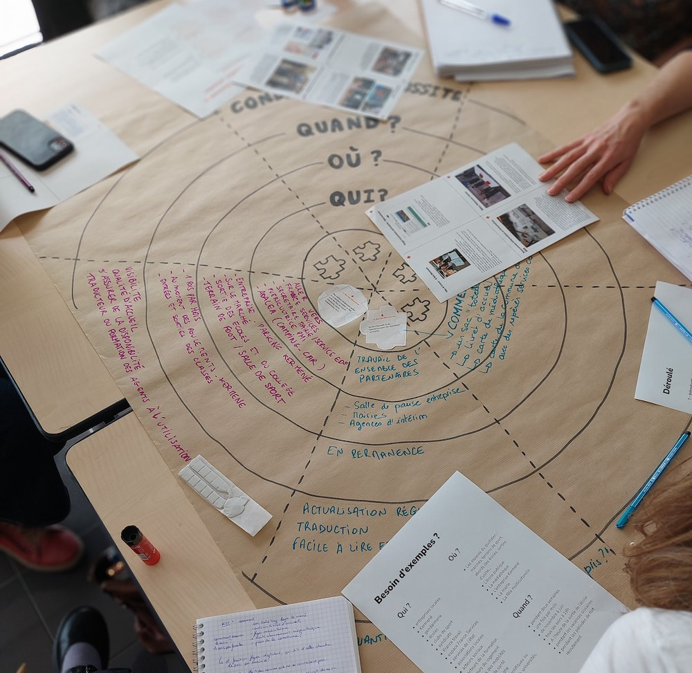
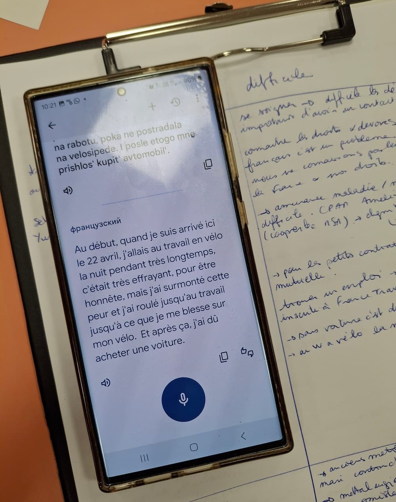
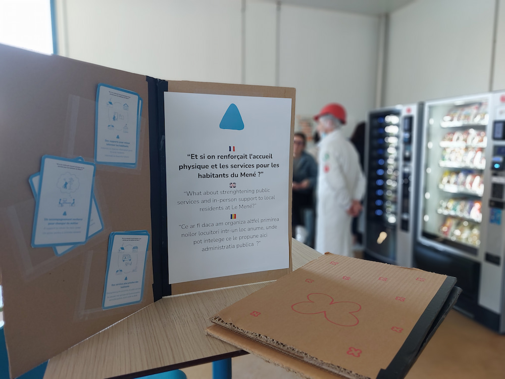
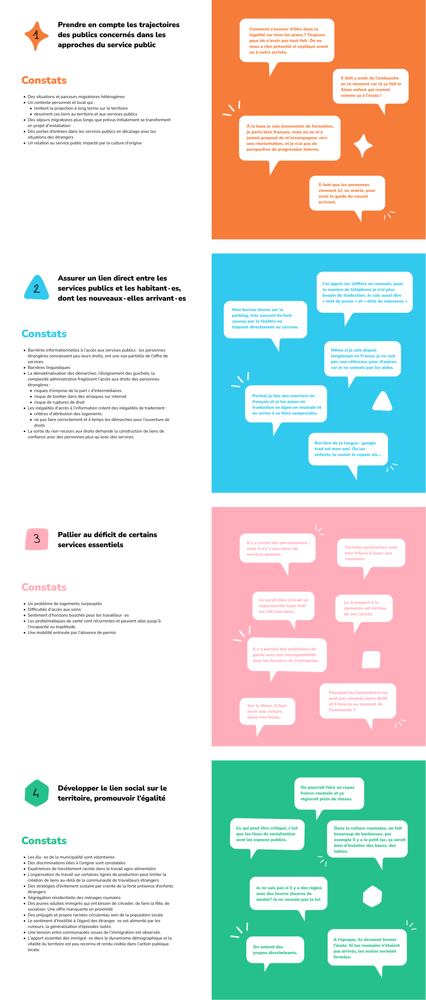
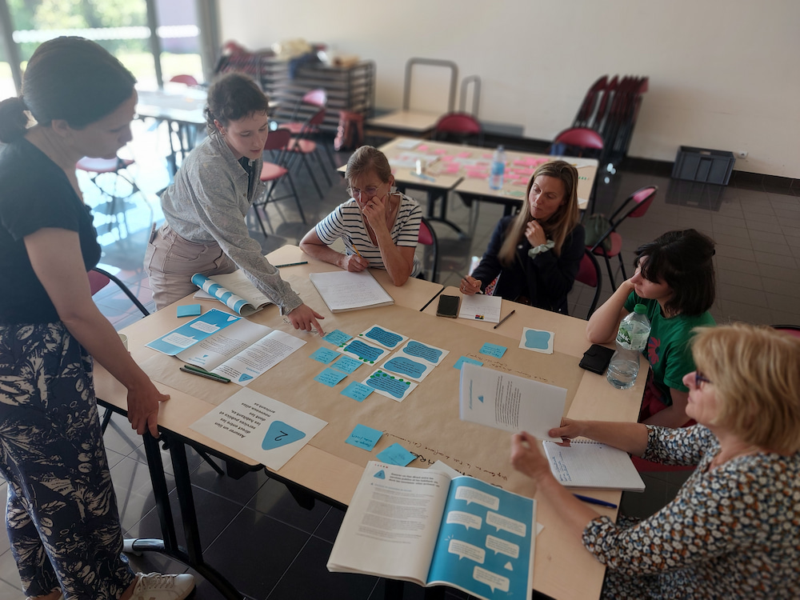

Vivre au Mené
Service - Accueil - Accès aux droits
Projet de design de service sur l'accueil des personnes allophones en milieu rural
Identifier des solutions concrètes pour améliorer l’accueil et le lien aux services publics pour les habitants de la commune nouvelle du Mené, dont de nombreux salariés étrangers allophones présents sur le territoire (lien avec la présence de plusieurs industries locales de l’agro-alimentaire).
Mon rôle dans le projet : immersion sur le terrain, atelier de co-construction avec les parties prenantes, graphisme des outils pour les ateliers, des livrables et des documents de communication.







